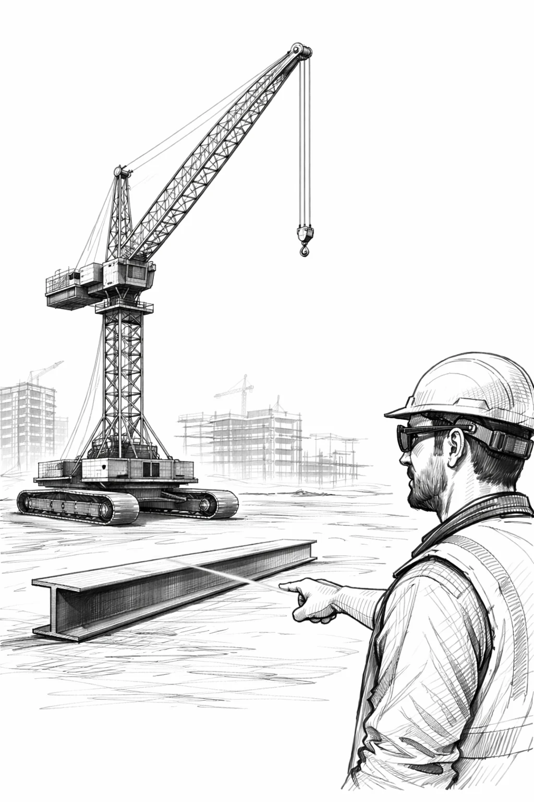
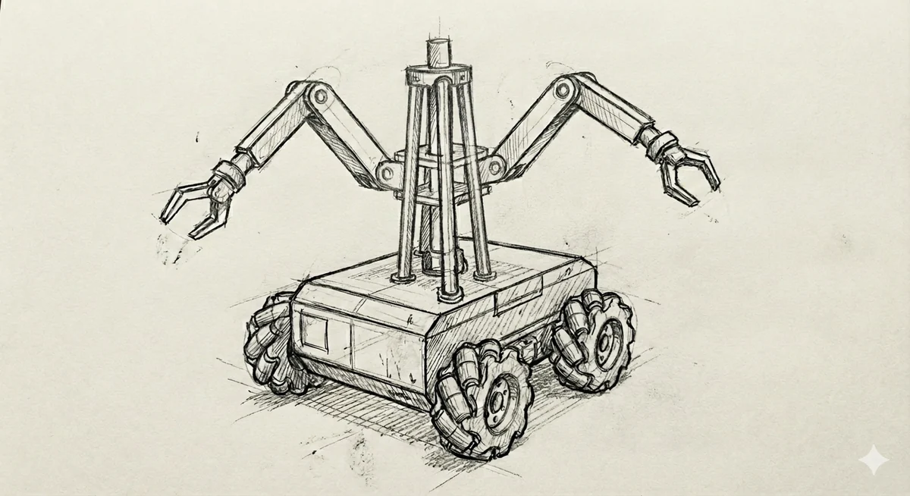

01
Leia
Bricklaying forklift robot
Leia lays bricks. Yes, we noticed. The platform starts with the repetitive motion that turns walls from schedules into math.

Autonomous construction robotics
IronPaw is a fleet thesis: bricks, studs, lift, and material handling, turned into machines that can work where labor is scarce and schedules punish hesitation.
IronPaw is not trying to make one robot do everything. It is building specialized construction machines that compound into a new operating system for physical infrastructure.
Each robot owns a repeatable trade motion. Together they point at a jobsite that behaves more like a factory.
Bricklaying forklift robot
Leia lays bricks. Yes, we noticed. The platform starts with the repetitive motion that turns walls from schedules into math.
Stud wall framing robot
Cub lays studs and builds wall frames. It does the rough framing layer before finish trades enter the room.
Autonomous telehandler
Grizzly moves pallets, steel, trusses, and tools without waiting for a human operator to be in the right machine at the right minute.

Autonomous crane
Polar turns heavy lift into a software-controlled operation with repeatable sensing, rigging discipline, and calm precision.

The Leia reference log shows the right founder pattern: build the machine, wire the camera, chase the vision stack, measure the miss, patch the controller, repeat. That is how field robotics gets real.
Gigafactories, tunnels, launch infrastructure, housing, data centers: every ambitious physical company is constrained by construction speed before it is constrained by imagination.
The jobsite has repeated motions, measurable geometry, and brutal labor gaps. The winning robot does not need to look human. It needs to do the trade motion safely, all day.
Leia creates walls, Cub creates frames, Grizzly moves materials, and Polar handles lift. Each machine increases the value of the others.
Build the future faster
The pitch is simple: buy the team early, give it manufacturing muscle, and turn construction from a bottleneck into an advantage.
Start the conversation